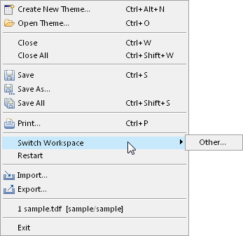

Themes are located in your workspace. You are asked to define a
workspace when you open Carbide.ui, but you can always change your
workspace from the File menu. Also, different users can have their own
workspaces.
To switch workspaces select File
-> Switch Workspace.

Figure: Switch Workspace Option
Select Other option
will open the Workspace launcher
window, You can select the desired workspace by clicking the Browse button.